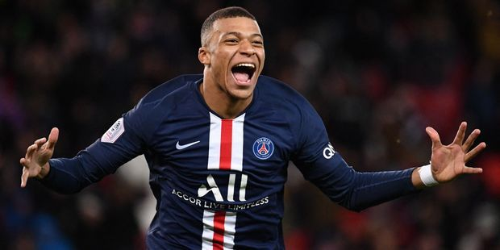

Qui est Kylian Mbappé ?
Kylian Mbappé est un footballeur français né le 20 décembre 1998 à Paris. Il grandit dans une famille de sportif qui lui donne très tôt le goût de l'activité physique, et en particulier du football. En effet, son père est un ex-footballeur aux racines camerounaises, ensuite reconverti en tant qu'entraîneur. Sa mère, elle, s'est fait connaître en tant que joueuse dans le milieu du handball. Kylian Mbappé a un grand frère, lui aussi connu en tant que footballeur professionnel, Jirès Kembo. Quand à son petit frère, Ethan, tout porte à croire qu'il va suivre lui aussi les traces de ses aînés en se consacrant au football.
Lors de la saison 2015–2017, Kylian Mbappé remporte le championnat de France au sein de l'AS Monaco. Il devient de ce fait l'un des meilleurs espoirs du football dans le monde entier. En mars 2017, alors qu'il est seulement âgé de 18 ans, il est sélectionné pour la première fois dans l'équipe de France. Fin août de la même année, il est transféré au PSG, où il occupe le poste d'attaquant.
